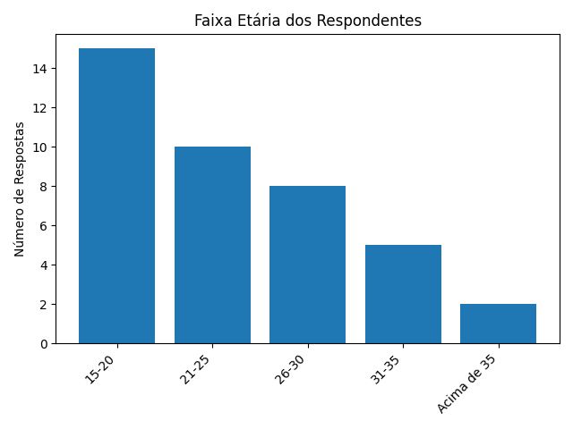
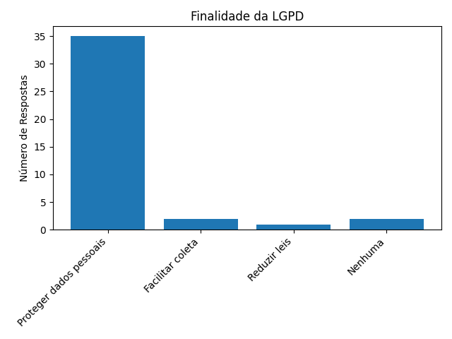
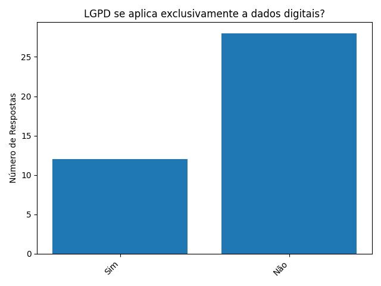
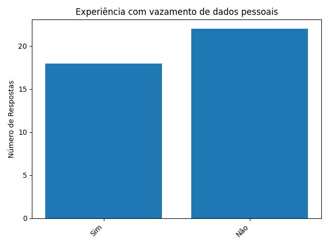
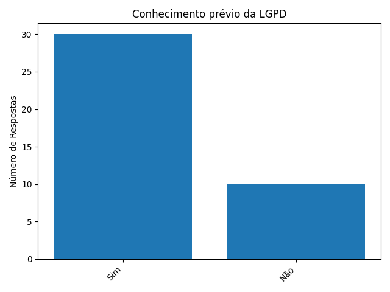

Grafícos Da Pesquisa
Faixa Etária dos Respondentes 
Finalidade da LGPD 
LGPD se Aplica Exclusivamente a dados Digitais? 
Experiênci com Vazamentos de dados Pessoais 
Conhecimento prévio da LGPD 
Dados Da pesquisa
Dados da Pesquisa
-
Faixa Etária:
- 15-20 anos: 15 jovens
- 21-25 anos: 10 jovens
- 26-30 anos: 8 jovens
- 31-35 anos: 5 jovens
- Acima de 35 anos: 2 jovens
-
Antes desta palestra, você já tinha ouvido falar sobre a LGPD?
- Sim: 30
- Não: 10
-
Qual é a principal finalidade da LGPD?
- Proteger os dados pessoais: 35
- Facilitar a coleta de dados pelas empresas: 2
- Reduzir o número de leis sobre dados: 1
- Nenhuma das alternativas: 2
-
A LGPD se aplica exclusivamente a dados coletados por meios digitais?
- Sim: 12
- Não: 28
-
Você já teve alguma experiência com vazamento de dados pessoais?
- Sim: 18
- Não: 22
-
Quais das seguintes medidas você já tomou para proteger seus dados pessoais? (Marque todas as que se aplicam)
- Uso de senhas fortes: 25
- Uso de autenticação de dois fatores: 20
- Não compartilhar informações pessoais em redes sociais: 15
- Verificar a segurança de sites antes de inserir dados pessoais: 28
- Nenhuma das alternativas: 5
-
A coleta e tratamento de dados pessoais só podem ser feitos mediante consentimento do titular dos dados, salvo exceções previstas na lei. Você considera essa medida:
- Muito importante: 30
- Importante: 6
- Neutra: 2
- Pouco importante: 2
- Sem importância: 0
-
Como você acha que a LGPD impacta a gestão de dados em empresas?
- Aumenta a segurança dos dados: 20
- Dificulta a coleta de dados: 5
- Melhora a confiança dos consumidores: 10
- Todas as alternativas acima: 5
-
A palestra ajudou a aumentar sua compreensão sobre a importância da proteção de dados pessoais?
- Sim: 35
- Não: 2
- Um pouco: 3
-
Você gostaria de receber mais informações sobre proteção de dados pessoais e a LGPD?
- Sim: 32
- Não: 8
-
Como você classificaria a utilidade dos materiais disponibilizados (eBook e PowerPoint)?
- Muito útil: 25
- Útil: 10
- Neutro: 3
- Pouco útil: 2
- Inútil: 0
Quero Participar da Pesquisa
Link:
https://forms.gle/wdLdeJMjaRw54iSk7Imagens:
Imagem 1 - Geradas pela Linguagem de Programação Python
Imagem 2 - Geradas pela Linguagem de Programação Python
Imagem 3 - Geradas pela Linguagem de Programação Python
Imagem 4 - Geradas pela Linguagem de Programação Python
Imagem 5 - Geradas pela Linguagem de Programação Python
Fontes:
https://www.google.com/intl/pt-BR/forms/about/
https://www.python.org/
https://replit.com/languages/online-python-compiler
https://docs.python.org/pt-br/3/library/
https://www.hlti.com.br/seguranca-informacao/